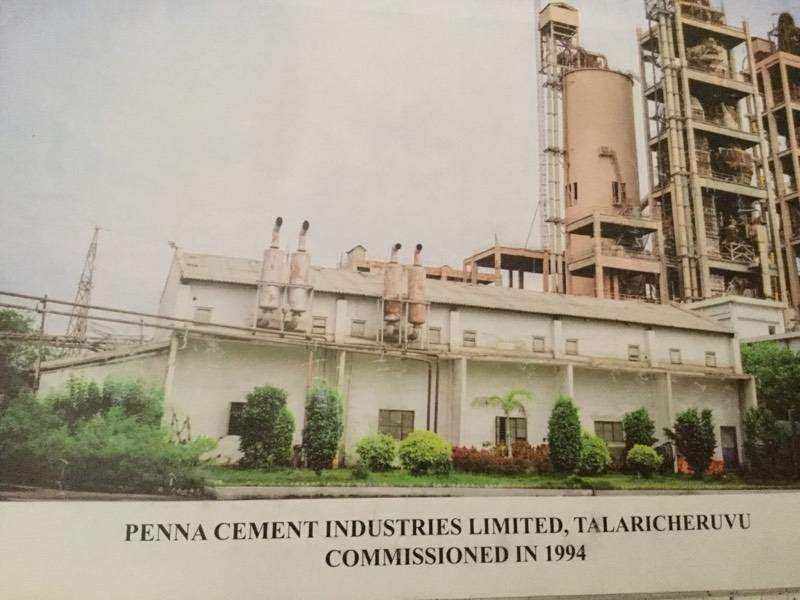
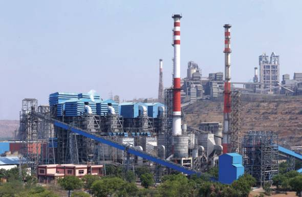
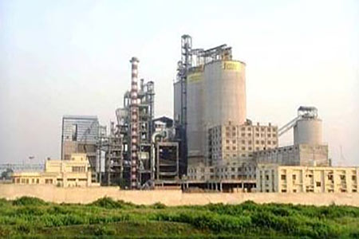

About Penna Cement Industries Ltd. :-
Registered in 2011 , Penna Cement Industries Ltd. has made a name for itself in the list of top suppliers of Pozzolana Cement ,Penna Cement in India.
The supplier company is located in Tadpatri, Andhra Pradesh and is one of the leading sellers of listed products.
Penna Cement Industries Ltd. is listed in Trade India's list of verified sellers offering supreme quality of PPC Cement etc. Buy Pozzolana Cement ,Penna Cement in bulk from us for the best quality products and service. BOYAREDDYPALLI
 TALARICHERUVU
ULTRA TECH
Ultratech Cement Limited in Bhogasamudram, Tadipatri is a top player in the category Cement Dealers-Ultratech in the Tadipatri.
This well-known establishment acts as a one-stop destination servicing customers both local and from other parts of Tadipatri.
Over the course of its journey, this business has established a firm foothold in it’s industry.
 ULTRA TECH
ARJAS STEEL
Arjas's steel plant is situated at Tadipatri, Andhra Pradesh, and has an installed capacity of 300,000 tons of
special steel - long products per year, focused on automotive, defence, railways and related industries.
ARJAS
SAGAR CEMENTS
BMM has a one-million-tonne capacity plant at Gudipadu near Tadipatri in Anantapur district of Andhra Pradesh and limestone reserves of around 155 million tonnes.
Up to June 30, 2015, Sagar had paid ₹150 crore to BMM.
The closure of acquisition is subject to the mining lease clearance which has to be obtained by BMM.
 SAGAR
.jpg)